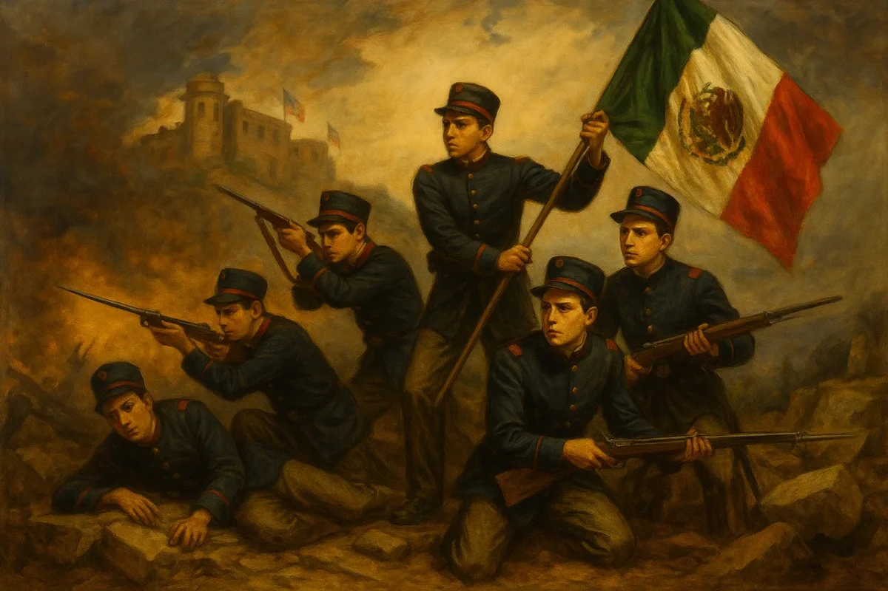

13 de Septiembre – Gesta Heroica de los Niños Héroes de Chapultepec (1847)
Esta fecha conmemora uno de los episodios más emotivos y significativos de la historia nacional: la defensa del Castillo de Chapultepec en 1847 durante la intervención estadounidense. Ante la inminente toma del recinto, los cadetes del Heroico Colegio Militar —Juan de la Barrera, Agustín Melgar, Francisco Márquez, Fernando Montes de Oca, Vicente Suárez y Juan Escutia— decidieron resistir y proteger la bandera nacional con su propia vida. Más allá de los debates historiográficos sobre sus detalles, esta gesta simboliza el patriotismo, la valentía y el compromiso irrestricto de la juventud mexicana con la soberanía del país frente a las agresiones extranjeras.
